8.1 欧氏空间的定义
围绕欧氏空间的定义展开定义、性质、计算与应用。
进度0%
掌握 0 / 5§8.1.1
欧氏空间的定义 · 第1页
内积空间及变换 / 欧氏空间的定义
三维空间中有距离,夹角等概念 \(\overset{\text{坐标系}}{\Longrightarrow}\) 三维数组向量空间\({\mathbb R}\)上向量的模长和夹角.
比较容易地推广到\({\mathbb R}^n\): \(|(x_1,\cdots,x_n)|:=\sqrt{x_1^2+\cdots+x_n^2}\).
问题: 如何推广到抽象的线性空间上呢?

回顾\({\mathbb R}^3\)上的模长与夹角公式:
\[
\begin{split}
|a| & = \sqrt{(a,a)}\\
\theta & = \arccos\frac{(a,b)}{\sqrt{(a,a)(b,b)}}
\end{split}
\]
容易看出模长和夹角可以由内积完全确定.
反之,内积可由模长唯一确定
\[(a,b)=\frac{|a+b|^2-|a|^2-|b|^2}{2}.\]
总结 \({\mathbb R}^3\)上内积有如下基本性质:
-
对称性
-
线性性
-
正定性
为了在一般的\({\mathbb R}\)-线性空间上定义度量,我们需要引入一般空间上的内积.
这页感觉如何？
§8.1.2
欧氏空间的定义 · 第2页
内积空间及变换 / 欧氏空间的定义
欧式空间 = \({\mathbb R}\)-线性空间 + 内积;
\({\mathbb R}\)-线性空间 = 集合 + 加法 + (\({\mathbb R}\))数乘
\({\mathbb R}\)-线性空间 = 集合 + 加法 + (\({\mathbb R}\))数乘
注: 内积\((-,-)\)对第二个分量也是线性的.
这页感觉如何？
§8.1.3
欧氏空间的定义 · 第3页
内积空间及变换 / 欧氏空间的定义
为了定义夹角,我们需要引入:
证明思路:考虑二次多项式\((xa+b,xa+b)\)的判别式.
可以定义夹角了!(不确定原理.)
这页感觉如何？
§8.1.4
欧氏空间的定义 · 第4页
内积空间及变换 / 欧氏空间的定义
构造一个内积使得给定的一组基均为单位向量且两两垂直.
任意有限维实线性空间一定存在内积. 注:任意内积均为这一形式!
这页感觉如何？
§8.1.5
欧氏空间的定义 · 第5页
内积空间及变换 / 欧氏空间的定义
在无穷维空间上也可类似的定义内积.
我们称带内积完备的\({\mathbb R}\)-线性空间为Hilbert空间.
这页感觉如何？